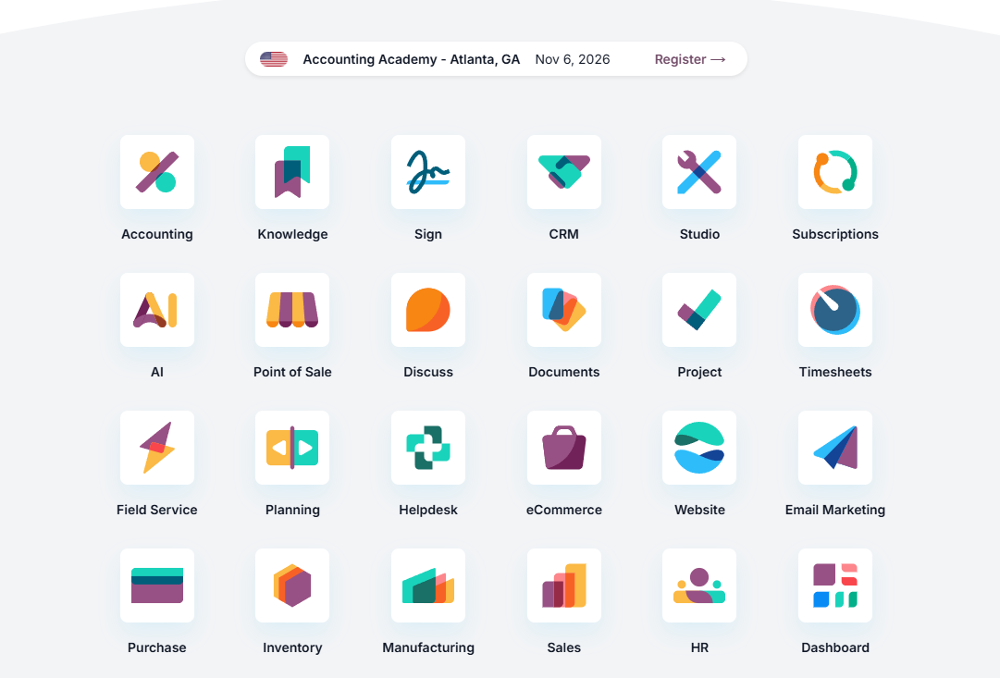

CRM 客戶關係管理
- 集中客戶聯絡方式、來源、需求及跟進記錄。
- 以階段整理新線索、報價中與已成交商機。
- 設定負責同事、提醒及必要的查看權限。
 Smartech AIAI Academy
Smartech AIAI Academy
BUSINESS SYSTEMS · ONE WORKFLOW AT A TIME
從 CRM、銷售、會計和薪酬，到庫存、項目、電郵與活動管理，先找出你最需要打通的一段流程。Fion Tan 與 Smartech AI Academy 可按現有工具、資料和人手，討論適合的系統方案。
本頁展示可規劃的業務功能。選用 Odoo 或其他平台、功能可用性與實際交付範圍，均須在需求確認後決定。

CONNECTED OPERATIONS
不同部門可共享需要的資訊，同時保留各自的權限與審核責任。
MODULES BY BUSINESS NEED
你可以從單一問題開始，毋須在第一步就導入所有系統。
PLATFORM REFERENCE
以下圖片與影片是網站管理者提供的 Odoo 參考素材，展示其應用模組與操作概念；它們不是 Smartech AI Academy 的系統畫面或交付案例。

Odoo 產品參考影片（約 2 分 16 秒，素材由網站管理者提供）。影片展示第三方平台功能，不代表已購買授權、完成接入或與 Odoo 建立合作關係。
HOW A PROJECT STARTS
有些需要可透過現成平台配置，有些需要資料整理、系統串接或客製功能。先確認範圍，才談交付與費用。
SCOPE & SAFEGUARDS
平台費用HK$3,000 起為本站 IT 系統方案的服務起價，詳細報價面議。Odoo 或其他平台的授權、託管、使用者、插件及第三方費用，需獨立核對。
資料與安全客戶、薪酬與財務資料需按角色設定權限，並確認備份、保留和匯出方式。正式資料遷移前，應先測試與取得授權。
合規與專業審核會計、稅務、薪酬和私隱要求會因地區而異。系統流程可協助管理，但相關規則須由具資格的人員確認。
功能分類參考 Odoo 官方應用清單。Odoo 為第三方產品；本頁介紹 Smartech AI Academy 可討論的獨立 IT 系統服務，並不宣稱官方代理或合作關係。
START WITH YOUR WORKFLOW
告訴 Fion 目前的系統、涉及的團隊和最想處理的問題，再一起確認可行的模組與報價。
港幣 HK$3,000 起 · 詳細範圍及費用面議